Said Fawzy's Curated Library
Microsoft Power BI Books
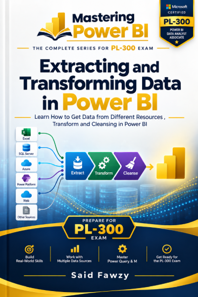
Extracting and Transforming Data in Power BI
A comprehensive hands-on guide covering the ETL lifecycle in Power Query. Master data connection, column transformations, joins, and end-to-end data preparation.
دليل تطبيقي شامل يغطي دورة معالجة البيانات (ETL) بالكامل عبر محرك Power Query.
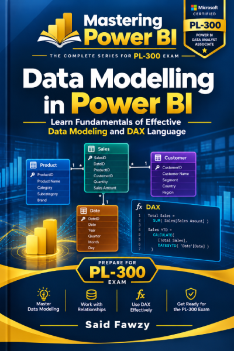
Data Modelling in Power BI
Master enterprise data modeling architectures and DAX calculations. Covers Fact vs. Dimension tables, Star & Snowflake schemas, relationship cardinality, and DAX measures.
المرجع الشامل في نمذجة وهندسة البيانات وجداول الحقائق والأبعاد ومقاييس DAX.
Data Visualization in Power BI
Master advanced Power BI visuals, interactive reports, bookmarks, drill-through, and Power BI Service publishing with 33+ practical exercises.
مرجع عملي شامل لبناء التقارير واللوحات التفاعلية والرسوم المتقدمة والنشر السحابي.
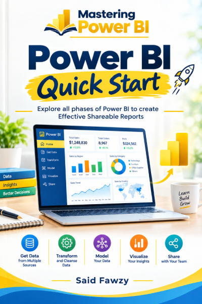
Power BI Quick Start
A practical fast-track guide designed to get you analyzing data and building reports within hours.
دليل الانطلاق السريع والمكثف لتعلم Power BI وبناء التقارير في ساعات معدودة.
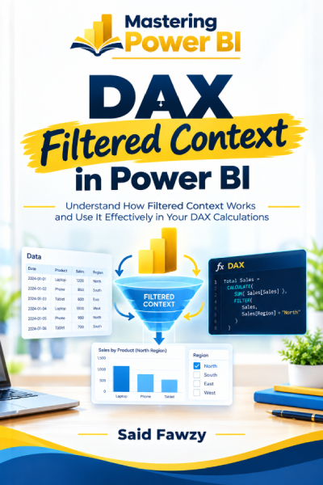
DAX Filtered Context in Power BI
A focused masterclass on the analytical core of Power BI: Filter Context, CALCULATE, and Context Transition.
كتيب تخصصي متقدم يركز على سياق التصفية ودالة CALCULATE وانتقال السياق.
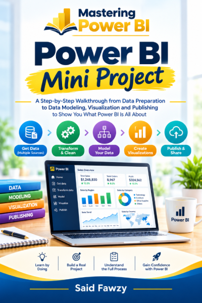
Power BI Mini Project
A practical, step-by-step walkthrough project based on an HR dataset with Power Query cleaning and publishing.
مشروع تدريبي عملي خطوة بخطوة على بيانات موارد بشرية واقعية مع التنظيف والنشر.
Power BI Manager's Guide
A strategic guide crafted for project managers to understand the analytics lifecycle and lead BI teams effectively.
دليل إداري واستراتيجي لمديري المشاريع والقيادات لدعم اتخاذ القرار وتحليل البيانات.
Microsoft Excel Books
ميكروسوفت إكسيل للمبتدئين
دليل تدريبي تطبيقي شامل من 10 فصول يبدأ معك من الصفر لاحتراف واجهة إكسيل والدوال الأساسية.
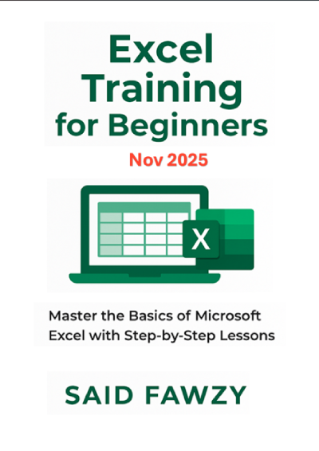
Excel Training for Beginners
A hands-on foundation guide covering Excel interface navigation, workbook structure, and essential formulas.
النسخة الإنجليزية المعتمدة للتأسيس الاحترافي في إكسيل خطوة بخطوة عبر 10 فصول تطبيقية.
Excel Intermediate Training (2nd Edition)
Take your spreadsheet skills further with Named Ranges, tables, lookup mastery (VLOOKUP, XLOOKUP), and conditional formatting.
الطبعة الثانية للمستوى المتوسط؛ تغطي النطاقات المسماة ودوال البحث المتقدمة.
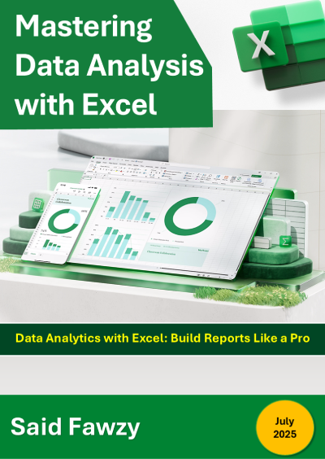
Mastering Data Analysis with Excel
Bridging classic Excel and Modern Analytics: master Pivot Tables, Power Query ETL, and DAX measures.
دليل احتراف تحليل البيانات بالإكسيل الحديث مع جداول الـ Pivot ومعالجة البيانات عبر Power Query.
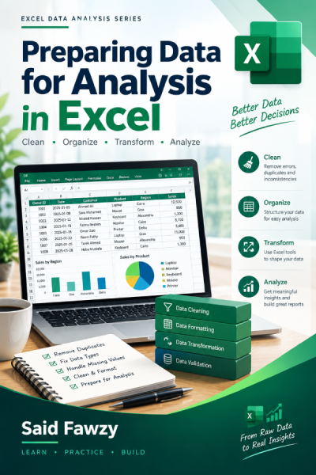
Preparing Data for Analysis in Excel
The foundational handbook for aspiring data analysts, mastering data cleansing and a 6-year business dataset.
الدليل التأسيسي الشامل في فلسفة إعداد وتحليل البيانات وتدريب عملي على بيانات شركة لـ 6 سنوات.
Introduction to Data Analysis using Excel
The classic scenario-based foundation for Excel analytics, charts, tables, and executive dashboards.
الدليل التأسيسي الكلاسيكي لتحليل البيانات وإعداد التقارير وتجميع لوحات القيادة التفاعلية.
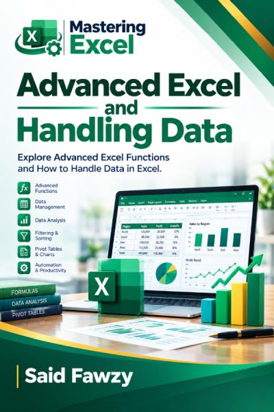
Advanced Excel and Handling Data
A practical deep dive into advanced spreadsheet functions, nested logic, dynamic lookups, and validation constraints.
دليل تطبيقي متقدم في استغلال أدوات إكسيل الاحترافية ومعالجة البيانات المعقدة والشروط المتداخلة.
Mastering Database Books

Getting Started with MS Access
A comprehensive 5-day foundational guide for beginners: master database system environments, ERD modeling, table relationships, query basics, forms, reports, and complete application design.
دليل تأسيسي مكثف لمدة 5 أيام للمبتدئين؛ يغطي أساسيات نظم قواعد البيانات، نمذجة ERD، علاقات الجداول، الاستعلامات، النماذج، التقارير وبناء التطبيقات.
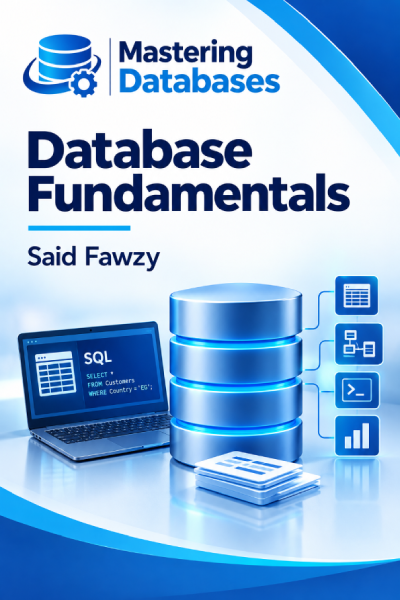
Database Fundamentals
A foundational guide bridging relational database theory with practical design, ERD, and SQL DDL.
المرجع التأسيسي في علوم ونظم إدارة قواعد البيانات العلائقية ومخططات ERD.
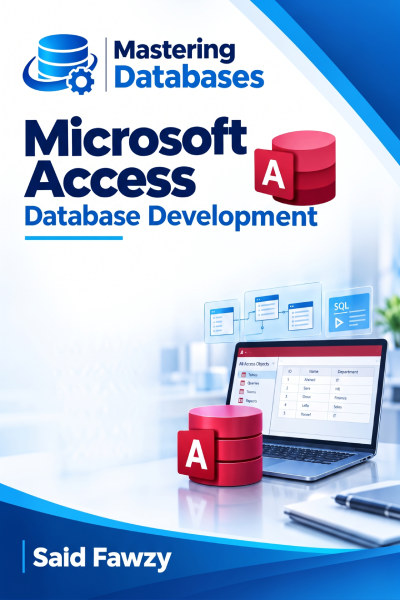
Microsoft Access Database Development
An intensive hands-on lab manual covering table structures, primary keys, referential integrity, and SQL.
دليل المختبرات والتطوير العملي في Microsoft Access وتصميم الجداول والاستعلامات المتقدمة.
Microsoft Access Application Development
Transform raw databases into fully functional desktop applications with custom Forms, SubForms, and Switchboards.
دليل تحويل قواعد البيانات إلى تطبيقات أعمال مكتبية متكاملة ونماذج وموحدات تنقل.
Business Excellence & Management
The Art of Writing Professional Emails
A comprehensive interactive learning experience covering professional email structure, business etiquette, and rewrite workshops.
حقيبة تدريبية تفاعلية ثنائية اللغة لهيكلة المراسلات الرسمية وقواعد الإتيكيت.
Power Automate - Manage Client Emails Workflow
A practical enterprise automation project manual connecting Outlook to SharePoint Lists.
مشروع تطبيقي لبناء منظومة أتمتة مؤسسية لمراسلات العملاء عبر Power Automate و SharePoint.
Risk Management for Projects
A structured project management manual for identifying, categorizing, and assessing engineering risks.
دليل منهجي متقدم لإدارة مخاطر المشروعات الهندسية ونمذجة المحاكاة.
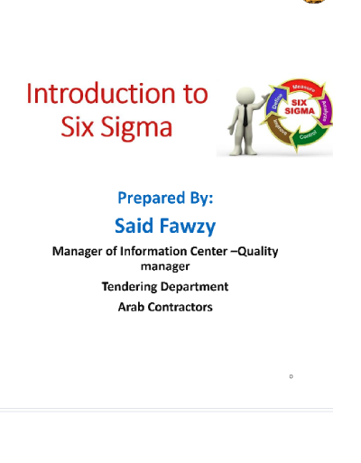
Introduction to Six Sigma
A solid operational excellence handbook covering Six Sigma fundamentals, DMAIC methodology, and SIPOC diagrams.
مرجع تطبيقي في مبادئ الجودة وإدارة العمليات وفق منهجية سيكس سيجما ودورة DMAIC.